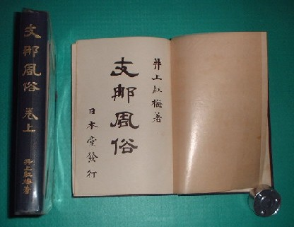
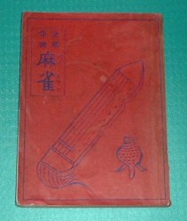

古本と古書は表現が違うだけ。しかし「古本」というと何んとなく一般的。昨日出版された新刊でも、今日、古書店の店頭に並べば古本（ふるほん）と呼ばれるが、古書とは呼ばれない。やはり「古書」というと、なんとなく古本より時代がかかっているとか価値がある本の印象がある。
これは麻雀本でも同様で、σ(-_-)が「麻雀古書」という場合には、戦前に出版された本をイメージしている。では戦後出版された本は、古書には入らないのかといえば、そうでもない。昭和40年以前に出版された本なら、古書と読んでもさしつかえない。それ以降に出版されたものは、まだ「古本」の世界だ。
そこでその麻雀古書であるが、大雑把に次の３グループに分けられる。
Ａグループ 大正中期〜昭和18年
Bグループ 昭和20年〜昭和30年
Cグループ 昭和30年〜昭和40年
Ａ グループは、いわゆる戦前書。麻雀研究には書かせない貴重書、あるいはエポックメーキング的な書籍の山である。たとえば下図。これは井上紅梅（こうばい）の「支那風俗・中巻（大正10年、上海日本堂刊）」。 これは数年間にわたって刊行された不定期誌「支那風俗」を上・中・下の３冊にまとめた合本である(書影は上巻と中巻）。

この支那風俗が不定期誌であった大正８年11月の二巻６号に、麻雀が初めて日本語で紹介されたというエポックメーキング書である。元の支那風俗の二巻６号も、合本の方も現在入手可能である。
とはいえ滅多に出ないし、一般の人が手に入れるのはきわめて困難ではある。価格は現時点で二巻６号が3000円くらい、合本の方が１冊で6000円くらいか。内容というより、エポック的な意味で超貴重書である。
下図は、日本国内で最初に出版された麻雀入門書、「支那骨牌・麻雀」。初めての麻雀入門書というので、当時爆発的に売れた。そんなに売れたんなら、現在もドッサリ残っていても良さそうであるが、それが残っていない。
それはこの本が文庫本サイズのうえに装丁も簡単なものであったこと。内容も重厚ではなくゲームの遊び方が記してあるだけであった。そこでやがて本格的な装丁の麻雀書が続々と刊行されると、脇役的存在になっていったからである。そこで現在でも古書として入手可能ではあるが、入手難度は支那風俗と同じレベル。

表紙が赤いので通称「赤本」と呼ばれた。面白いことにアメリカで最初に出版されたBubcock,Joseph
P.による麻雀入門書、「Bubcock's rules for mahjongg」Mahjong company of Chaina(Shanghai/1920）も、表紙が赤かったのでRed
Bookと呼ばれた。偶然には違いないが、それにしても面白い。
「支那風俗」と同様の貴重書であるが、文庫本サイズの装丁簡単という本なので、まだ古書店の人が重視していない。そこでこんな貴重書であるにもかかわらず運良く見つけた場合には、意外にこなれた価格で入手可能な場合がある。う〜ん、といっても古書店にもよるので何とも言えないが中心価格としては\2000-〜\3000-というところか。
といっても内容や装丁に関係なく、麻雀古書なら何でも高い価格をつける店もある....そういう店の場合は\5000-以上の値がついているかも知れない。でもこの本に関して言えば、それが適価なんだよね....（あ、古書店関係の人、ここ見ないで(＾0＾； ）。
大体、古書店の分類では、麻雀書は雑書の範疇。それで昭和時代、特に昭和50年代には非常に廉価だった。価格帯も数百円から高いモノで¥2000-くらいまで。中心価格帯としては\1000-前後というところ、それが昭和60年代に入るとぼちぼち値がアガってきて、中心価格帯が\2000-となった。
平成に入るとなんやかんやで麻雀書も結構売れるということが古書店にも知れてきて、また一段と高くなり、中心価格帯は\3000-ぐらいとなった（σ(-_-)のせいもあると思うが、麻雀博物館のせいもだいぶんあるぞ....）。それが最近またアガってきて、ここ最近は、４，５千円.....ひい〜